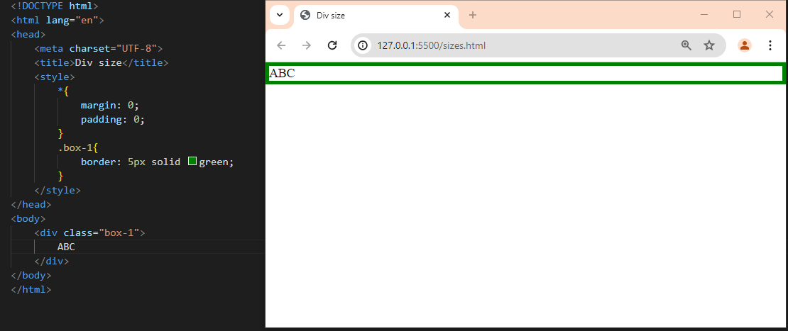
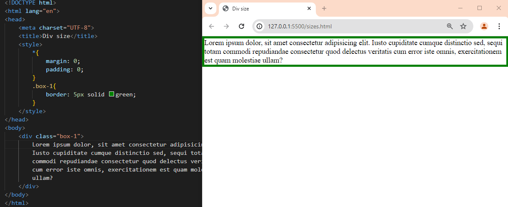
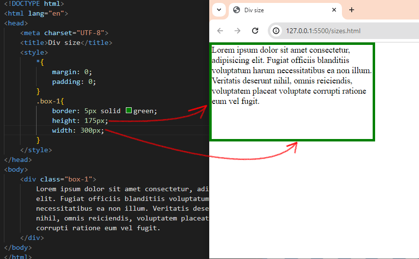
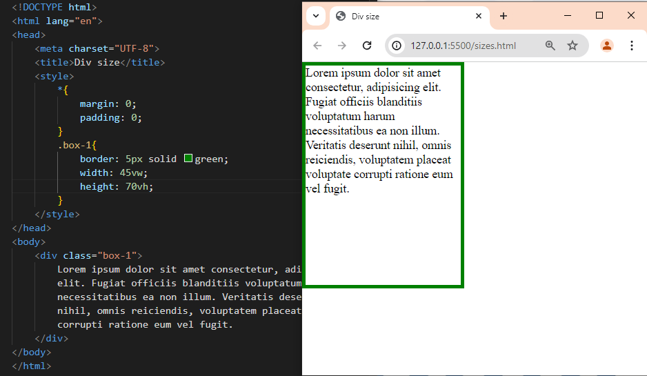
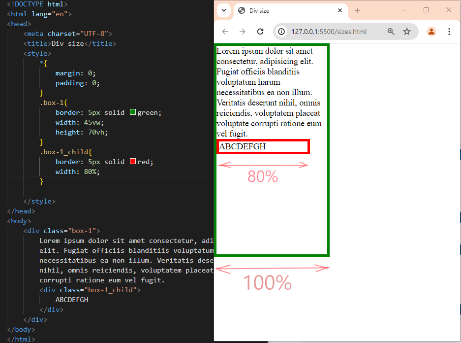

Размеры блоков
-
Сделаем простейший блок с текстом, назначим ему границу border. По ширине он растянулся на все окно браузера, а высоту подстроил под буквы текста.
Добавив тескта побольше, увидим, что он переносится на следующие строки и растягивает блок по высоте. То есть, размер блока подстраивается под содержимое.
 -
Это полезное поведение, но гораздо чаще мы сами устанавливаем эти размеры свойствами width (ширина) и height (высота).

Здесь размеры указаны в пикселях (px). -
Такие жесткие размеры не всегда бывают удобными, и тогда мы задаем их в процентах от размеров окна браузера, и блок будет растягиваться и сжиматься вместе с окном.

vw - один процент от ширины окна,
vh - один процент от высоты.
Размер шрифта тоже можно так указать ( например, font-size: 5vw ) -
Очень часто задают проценты от размеров родительского блока.

Сделаем дочерний блок и укажем ширину в процентах.